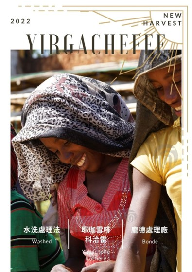

- 
衣索比亞 耶家雪菲 科洽雷 水洗處理法
商品描述
衣索比亞 耶家雪菲 科洽雷 水洗處理法
• 商品敘述:
• [2022新產季快報]
衣索比亞 水洗 耶珈雪啡 科洽雷 龐德處理廠 G1
Ethiopia Washed Yirgacheffe Kochere Bonde G1
國家 衣索比亞 (Ethiopia)
產區 SNNPR
蓋迪歐 (Gedeo Zone)
科洽雷 (Kochere Woreda)
龐德村 (Bonde Kebele)
海拔 1800-2100m
品種 Heirloom
主要是74110
年雨量 1,500 – 2,000 mm
處理法 水洗處理法
水分 13.1%
密度 835 g/l
水活性 0.69
乾香可感受到柑橘、萊姆、葡萄柚與淡淡的佛手柑與花香氣息,延續至啜吸,入口仍以檸檬皮、柚子、葡萄柚般的柑橘水果風味為主調,伴隨著橙花氣息,結尾帶有紅茶香氣,香甜乾淨。